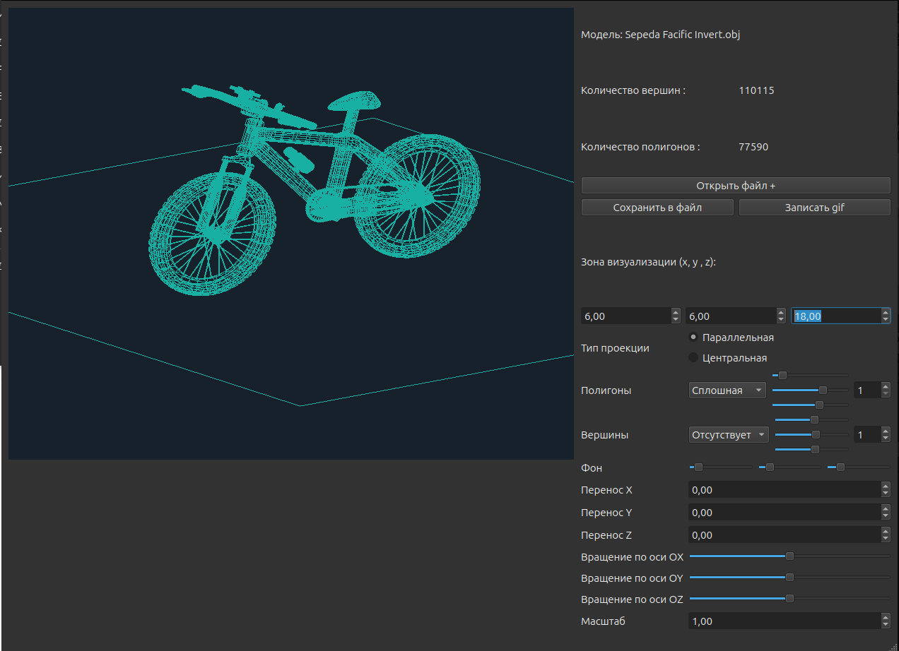

Обзор
3D Viewer - это инструмент для отображения и управления 3D моделями.
Основные функции
- Отображение 3D моделей
- Панорамирование и масштабирование
- Вращение модели
- Перемещение модели
- Управление поверхностями и вершинами модели
- Сохранение скриншота модели и запись gif файла
Установка
Для установки в консоли в директории src запустить инструкцию make install
Использование
После установки запустить приложение src/build/3DViewer
Выберите обьектный файл .obj нажав кнопку "Открыть файл"
Пример использования
Простой пример загрузки модели
Настройки программы
Настройки viebox
Настроить зону визуализации можно установив в 3х полях значения от 1 до 100(по x,y,z). Зона визуализации по каждой из осей устанавливается от отрицательного значения до положительного.
Тип проекции
По умолчанию выбрана параллельная проекция, но вы можете изменить тип проекции на перспективу.
Настройки полигонов
Для настройки доступны ширина полигонов и цвет. Цвет регулируется 3мя слайдерами для точной настройки (RGB).
Настройки вершин
Для настройки доступны тип, ширина и цвет вершин. Цвет регулируется 3мя слайдерами для точной настройки (RGB). По умолчанию отображение вершин выключено.
Настройки фона
Цвет фона регулируется 3мя слайдерами для точной настройки (RGB).
Перенос
Для перемещения модели в пространсте используйте поля переноса.
Поворот
Для поворота модели в пространсте используйте поля вращения.
Масштабирование
Масштабирование модели
Скриншот
При сохранении предлагает ввести название для файла (jpg или png)
Запись gif
Нужно выбрать директорию и название для файла с расширением gif, после чего начнется запись продолжительностью 5 секунд, с расширением 640 на 480, количество кадров в секунду 10